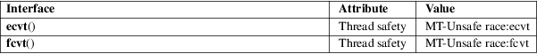

ecvt, fcvt − convert a floating-point number to a string
Standard C library (libc, −lc)
#include <stdlib.h>
[[deprecated]]
char *ecvt(double number, int
ndigits,
int *restrict decpt, int *restrict
sign);
[[deprecated]] char *fcvt(double number,
int ndigits,
int *restrict decpt, int *restrict
sign);
Feature Test Macro Requirements for glibc (see feature_test_macros(7)):
ecvt(),
fcvt():
Since glibc 2.17
(_XOPEN_SOURCE >= 500 && ! (_POSIX_C_SOURCE >=
200809L))
|| /* glibc >= 2.20 */ _DEFAULT_SOURCE
|| /* glibc <= 2.19 */ _SVID_SOURCE
glibc 2.12 to glibc 2.16:
(_XOPEN_SOURCE >= 500 && ! (_POSIX_C_SOURCE >=
200112L))
|| _SVID_SOURCE
Before glibc 2.12:
_SVID_SOURCE || _XOPEN_SOURCE >= 500
The ecvt() function converts number to a null-terminated string of ndigits digits (where ndigits is reduced to a system-specific limit determined by the precision of a double), and returns a pointer to the string. The high-order digit is nonzero, unless number is zero. The low order digit is rounded. The string itself does not contain a decimal point; however, the position of the decimal point relative to the start of the string is stored in *decpt. A negative value for *decpt means that the decimal point is to the left of the start of the string. If the sign of number is negative, *sign is set to a nonzero value, otherwise it is set to 0. If number is zero, it is unspecified whether *decpt is 0 or 1.
The fcvt() function is identical to ecvt(), except that ndigits specifies the number of digits after the decimal point.
Both the ecvt() and fcvt() functions return a pointer to a static string containing the ASCII representation of number. The static string is overwritten by each call to ecvt() or fcvt().
For an explanation of the terms used in this section, see attributes(7).

None.
SVr2; marked as LEGACY in POSIX.1-2001. POSIX.1-2008 removes the specifications of ecvt() and fcvt(), recommending the use of sprintf(3) instead (though snprintf(3) may be preferable).
Not all locales use a point as the radix character ("decimal point").
ecvt_r(3), gcvt(3), qecvt(3), setlocale(3), sprintf(3)